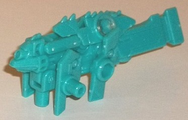
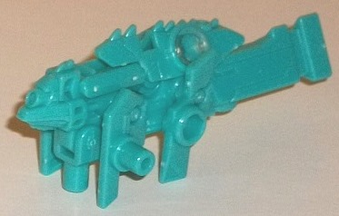
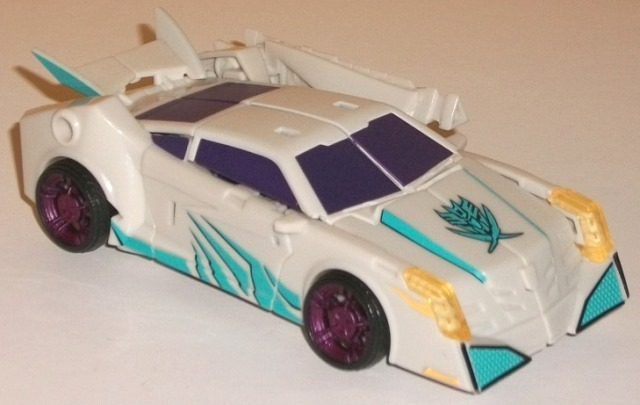
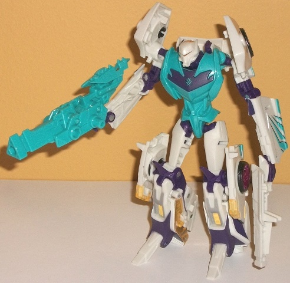

Plunder
Plunder

Allegiance : Star Seeker
Size : Mini-Con
Difficulty of Transformation : Very Easy
Color Scheme: Teal and some clear plastic
Individual Rating : 4.2
Dread
Pirate Clone (Pounce-type) w/ Plunder [BotCon 2014 Attendee-Only Exclusive]
Plunder

Allegiance
: Star Seeker
Size
: Mini-Con
Difficulty of Transformation
: Very
Easy
Color Scheme:
Teal and some clear
plastic
Individual Rating
: 4.2
Plunder is a redeco (like
all BotCon toys), but is a redeco of a toy previously released only in
Japan-- Arms Micron Igu. For a review of the mold itself, see my review
of his buddy Pillage, which comes with the "Wingspan-type" clone, a review
of which is linked to below. The only difference between Plunder and Pillage
is that Plunder is entirely teal (excepting the small orb of clear plastic
around where his allegiance symbol should be). It looks a little better
than the bland white used for Pillage, but there's still absolutely no
paint aps on Plunder at all, a significant downside. I really wish they
had made that sticker set for these guys that was apparently on the table
at one time...
Dread
Pirate Clone (Pounce-type)


Allegiance
: Star Seeker
Size
: Deluxe (comes in a 2-pack
with
Dread Pirate Clone [Wingspan-type]
)
Difficulty of Transformation
: Medium
Color Scheme
: Off-white, teal, and
some dark purple, black, metallic dull fuchsia, transparent pale yellow,
silver, and yellow
Individual Rating
: 9.6
(NOTE: Because this is a repaint, this is not a full-blown review. This mainly covers any changes made to the mold and the color scheme, and merely compares it to the Prime "Robots in Disguise" deluxe Vehicon. For a review on the mold itself, read the review of the Prime "Robots in Disguise" deluxe Vehicon figure here .)
This Dread Pirate Clone
is a called a "Pounce-type" primarily because of the color scheme, and
the fact that it has a near-identical robot mode to the "Wingspan-type"
Pirate Clone figure, thus fitting them into the G1 "Decepticon Clones"
slot. One can certainly see the similarities, but it's a bit of a stretch,
since G1 Pounce transformed into a cougar/panther and G1 Wingspan transformed
into a bird. I guess since Pounce was the land-based twin, that's why this
is the "Pounce-type" Clone. Still, if you're looking for a direct Pounce
update, this really isn't one. The colors ARE pretty good, though-- the
off-white and teal fit in very well with the Star Seeker colors, and contrast
and complement each other fairly well. There's some really nifty paint
apps on the "Pounce-type's" car mode, like angular teal details on the
sides with "shadows" to make them stick out a bit more-- plus they also
look like claw marks, another allusion to G1 Pounce! There's similiarly
black-bordered teal on the front bumpers and on the sides of sections of
the front hood, as well as some teal on the sides of the rear spoiler and
some on the large Star Seeker emblem on the front hood. Still, if you were
to just take those two colors by themselves, this Clone would be a bit
too light-colored; thankfully, there's a good amount of dark purple in
both modes, which contrasts VERY well against both colors and provides
a nice dark shade for the other shades to play off of. In vehicle mode,
the windows are all painted this dark purple; in robot mode, the middle
of the chest is this dark purple plastic, along with many of the small
connecting pieces spaced throughout said mode pretty well, so that no one
large area on the Clone is too one-tone. Additionally, there's a bit of
silver, albeit only on the lower legs-- it's a bit odd that it isn't used
on the chest or anything. There's some yellow paint used on the lower legs,
as well as side portions of the headlights in vehicle mode, and a transparent
version of the color used for the car windows, the main headlights, and
the "light piping" on the robot head. The light piping works VERY well,
though the yellow on the windows has been covered up by the purple; I don't
mind this as I think the purple looks better, but you can't really see
it except in the inner middle of the robot legs and during the transformation.
Finally, in a color nod to G1 Pounce, there's a bit of fuchsia, though
only painted on the wheel hubs; it's not nearly as common as it should
be if you wanted a more 1:1 color palette when you compare him to G1 Pounce.
It really doesn't add much to the overall scheme-- certainly not as much
as the "Wingspan-type" Clone's fuchsia wings.
No mold changes have
been made to the Dread Pirate Clone "Pounce-type" when compared with the
Prime deluxe Vehicon mold.
The "Pounce-Type" set I'd say is ever-so-slightly the weaker of the two "Clone" troopers, mostly because the "Wingspan-Type" has more fuchsia on its wings to help break up the color slightly more, and it's "new" to U.S. audiences, whereas the "Pounce-type" clone is a straight redeco (albeit one with a nice little extra). As with the "Wingspan-Type", I'd recommend this guy not so much as a bonafide upgrade to G1 Pounce, but just as a trooper to bulk up your pirate Star Seeker ranks, if that's what you desire, since he's just the right colors for the group.
Reviews by Beastbot